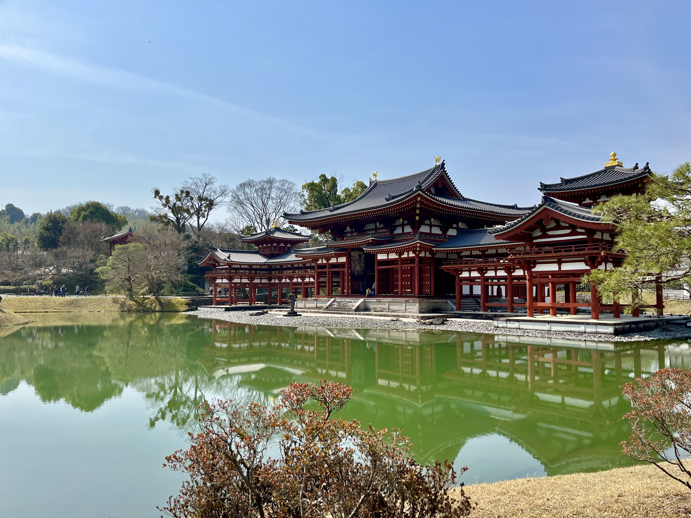
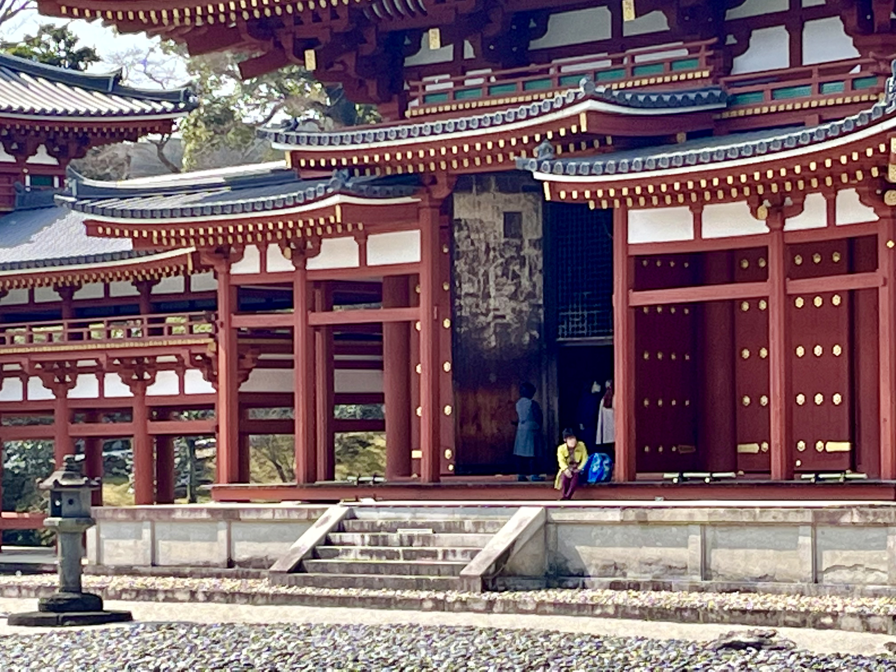
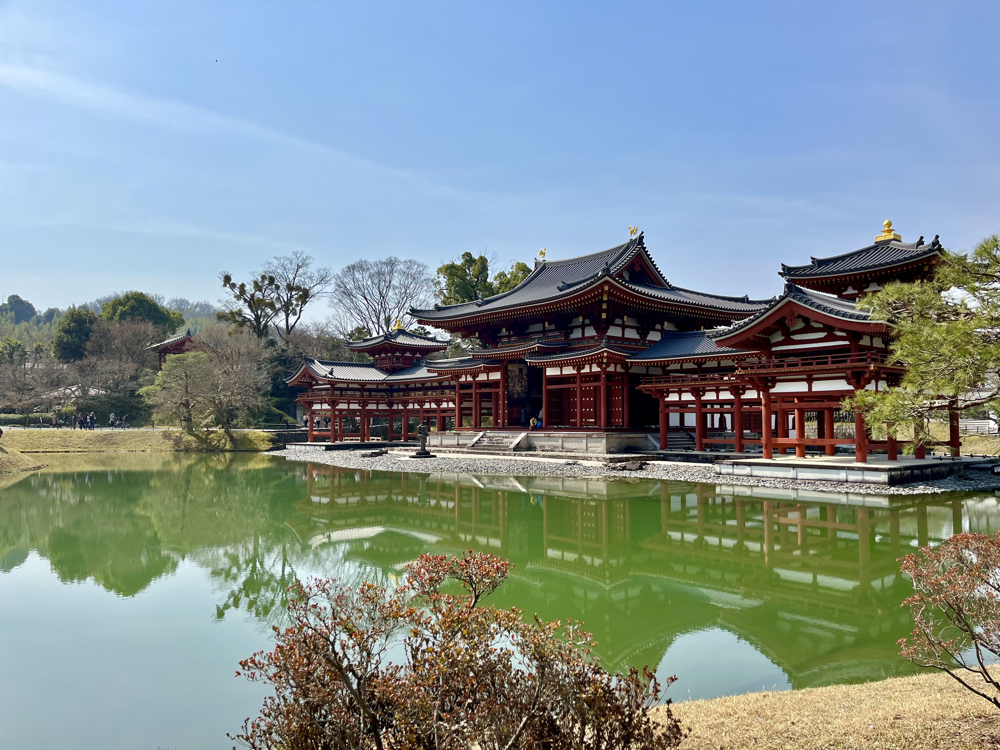
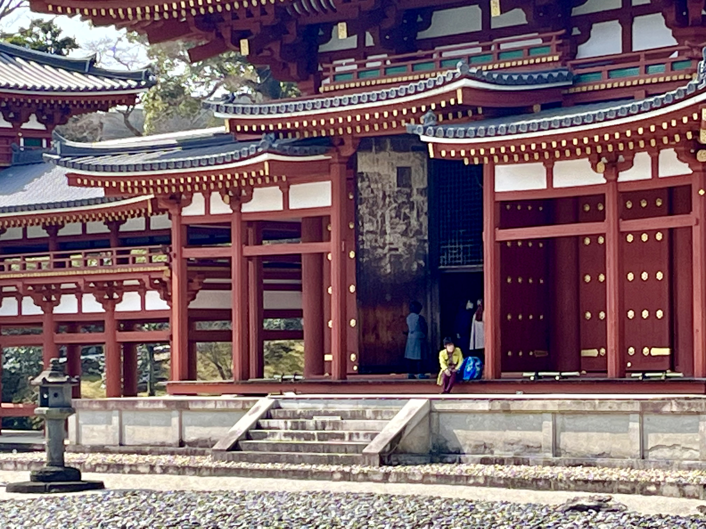

The Byodo-in Temple is a striking Buddhist temple located in Uji, Japan, known for its exquisite architecture and picturesque scenery. Originally built in the 11th century as a rural villa for a powerful political figure, it was later converted into a temple by his son after his death. The temple's main hall, known as the Phoenix Hall, is a national treasure of Japan and features a unique design with intricate carvings and sculptures. The temple grounds are also home to a beautiful garden with a large pond, cherry trees, and a variety of other plants and flowers.
The memory of our visit to the temple remains vivid in my mind. As I walked through the grounds, the beauty and tranquility of the surroundings captivated me. I can still recall standing at a corner of the pond, to the left of the temple, mesmerized by the sight of graceful carp swimming underneath the trees and the gentle turtles sunbathing on the pond's shore. The peacefulness of the scene before me was overwhelming, and I felt a sense of deep calmness wash over me. It was as if time stood still in that moment, and I was transported to a place of pure serenity. The beauty of the Byodo-in Temple and its surroundings left an indelible impression on me, and it is a memory that I will always cherish.